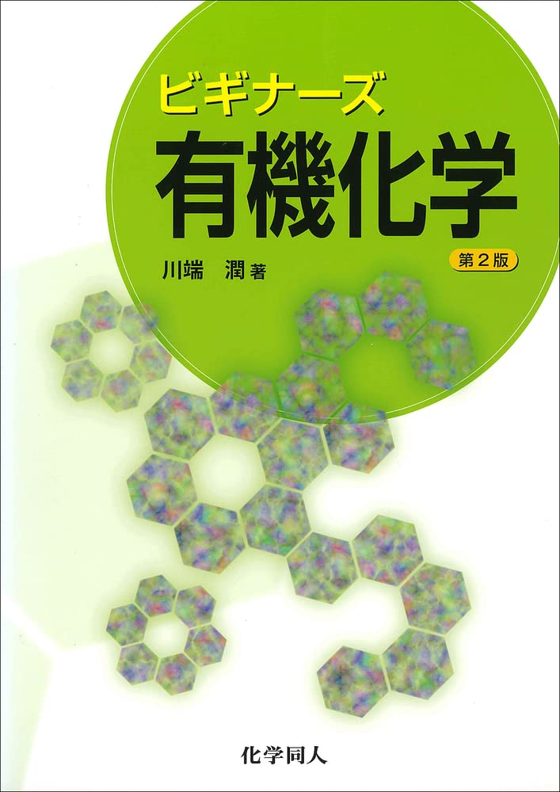

化学
大学で学ぶ化学のおすすめ参考書です。

ビギナーズ有機化学 川端潤著
「大学レベルの有機化学を1から勉強してみたい」という人におすすめの1冊。化学の教科書といえば外国の著者が書いた本で、内容も多く分厚いため取っ掛かりにくいというイメージがあるが、その点この本は日本人の著者が書いており、ページ数も200pとかなりスッキリしている。電子の動きで有機化学を勉強してみたいそこの君！まずはこの本だ！
化学の基礎 竹内敬人著
大学で学ぶ化学の基礎的な内容を全体的におさえることができる良書。かなり易しく書かれているため、ときには高校化学で学んだような内容も含まれるが、高校化学の用語を大学化学の範囲で復習できるような感覚で楽しい。後半はやや難しくなるが、めげずに頑張ろう。ふぁいと。
ブラウン一般化学I(物質の構造と性質)
物理的な部分に深入りせず(これが大事)、イラスト豊富な説明で初学者にぴったり。ちなみに自分は学部生の頃にこの本に出会えず、泣きながら化学を勉強した。今見返しても学ぶことが多い大好きな１冊。